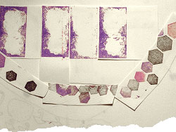

 image: E. Nagase“And then there is only tumbling, hexagonal cold.”
The door out of Eden looks much like any other. Heavy, of course, and much taller than you – that’s only to be expected. The glass is flawless. But there’s a handle in just the right place, and it’s warm to the touch, suggesting something might be gained from giving it a try. It swings open on a silver wing that unfolds with the silent grace of every bird that ever was. Then it closes behind you with the muffled hiss of an end-of-party balloon.
Divinity lingers in the steam rushing skyward from your every pore, in the private halo of warmth that melts the ambition of snow fallen ten thousand feet and yet six feet short. But such invincibility is short-lived. The window taunts you with infinity-edged visions of heaven, of water so hot it bubbles. And then there is only tumbling, hexagonal cold.[1]
From somewhere below, a thousand umbrellas are spinning this new world off-axis. In the uncountable whiteness, a lens is struggling for focus, locked only on the surreal. Fractured shapes swirling and settling in a failing kaleidoscope, strange objects adrift in space-time: palm trees, deck chairs, huge metal sculptures the shape of discarded crowns. In the distance – a word without meaning – the husk of an office tower no longer tethered to earth, and acetylene torches burning three thousand degrees of blue. Between your toes, where the liquid metal refreezes against your skin, the grain of the wood is sharp enough to convince you this might be real. That you might be, too. But there is nothing to hear, or perhaps just nothing that is meant to be heard, and there are not nearly enough colours to draw conclusions.
And so you look to the empty spaces for meaning – to the huge, unpeopled square[2] before you, to the sky-sized gaps between the snowflakes, and to the images that rush to fill them. Images of birds falling from the sky and giant racehorses frozen mid-flight. Rivers so big they never freeze and the nameless places they pass through; places so cold that words take physical form, crystallise and cling to you as they fall, then shatter at your feet. And all the people, in all the places, blindly scrambling to stay warm. These things are important.
And then a voice in the unheated space that remains.
“You don’t belong here.”
It sounds as you might, if you couldn’t decide whether to whisper or scream. If you’d just remembered a forgotten secret. If you’d climbed in a wardrobe and couldn’t get out.
Again, “You don’t belong here.”
That much is obvious. Naked but for swimwear in snows that have stopped a city – of course you don’t. You’re not even staying at the hotel[3]. You shouldn’t be out on their terrace.
How long have you been here? Three seconds? Four?
You’re fumbling for the door.
But already the voice is bolder, the words blocking your way, biting and clawing like something unleashed in the cold.
referenced works
- At the start of 2008, southern and central China experienced a devastating winter, the worst in half a century. The provinces of Hubei, Henan, Shandong, Jiangsu, Anhui and the municipality of Shanghai were hardest hit. At one point, 17 of the 31 provinces and autonomous regions of China had to endure reduced power supplies. In response to the storms, the Chinese government launched a “War on Snow Havoc” as part of which Shanghai’s skyline lights were shut off at night for the whole of February in order to conserve power. The total damage caused by the storms were estimated at RMB 111 billion (US$ 15.45 billion). ↩
- As early as the mid-19th century, the area that is now People’s Square (Renmin Guangchang) – and, to the north, People’s Park (Renmin Gongyuan) – was the site of colonial Shanghai’s 30-acre horseracing track. The sport was then a popular amusement for the British community and the upper-class Chinese. Opened in 1951 and renovated in 1994, with an intermediary spell as a public reckoning ground during the early days of the Cultural Revolution (1966-76), the square is now the site of, among other things, the Shanghai Urban Planning Museum and the Shanghai Grand Theatre, and is used as the standard reference point for measurement of distance in the Shanghai municipality. ↩
- Le Royal Meridien Shanghai stands on the northeast corner of People’s Square, where Nanjing Road East (which runs from the Huangpu River) becomes Nanjing Road West. The eastern stretch was formerly known as Park Lane, while its western course was known as Bubbling Well Road. The Chinese often refer to it as ‘Da Ma Lu’ (‘Great Horse Road’) and in 1937, it was named as one of the World’s Seven Great Roads. ↩
location information
- Name: the terrace of Le Royal Meredien hotel spa overlooking People’s Square
- Address: 789 Nanjing Road East
- Time of story: Afternoon
- Latitude: 31.236656
- Longitude: 121.481173
- Map: Google Maps
014 “The pages are half-soaked in noodle water, the edges of the letters blurred. ”
013 “Hundreds of eyes continued to dart around me, hundreds of eyes continued to pass me over.”
012 “I could be anywhere, really. There are no landmarks here.”
011 “I strained to keep my eyes on that crazy perm but the automatic doors hissed shut and she was gone. ”
010 “How could these seemingly disparate worlds co-exist? Wouldn't they come together and explode like anti-matter?”
009 “It's strange how her hair seemingly reacts to her mood – her fountains wilt and slump when she is tired and grumpy. ”
008 “Your bones are cold.”
007 “Upon seeing the delinquent busker dragged from the scene with his trousers at his ankles, I felt lost. ”
006 “As we all stare at her open-mouthed, she starts to beg like a dog, barking and licking my hand. ”
005 “It's like... one long catwalk of H&M zombies. Where are all the individuals?”
004 “Like many aimless thirtysomethings, I balance violent fantasies of self-destruction with monthly pension payments. ”
003 “It was only a 10-minute bike ride from city centre, but 10 minutes in the wrong direction. ”
002 “I thought of the mutilated pig lying atop cardboard boxes of cereal and pasta, seeping trichinosis as the van bounced along. ”
001 “And then there is only tumbling, hexagonal cold.”

Write for Us!
We’re looking for short narratives describing pivotal moments of elation, confusion, absurdity, love or grief — or anything in between — inseparably tied to a specific place in Shanghai.
Shanghai:
Or receive updates by email
Addresses only used for the occational hitotoki mailing. Otherwise shoved behind the pitch black toilet in Boonna Cafe II.
A list of all available RSS feeds is on the about page
commentary